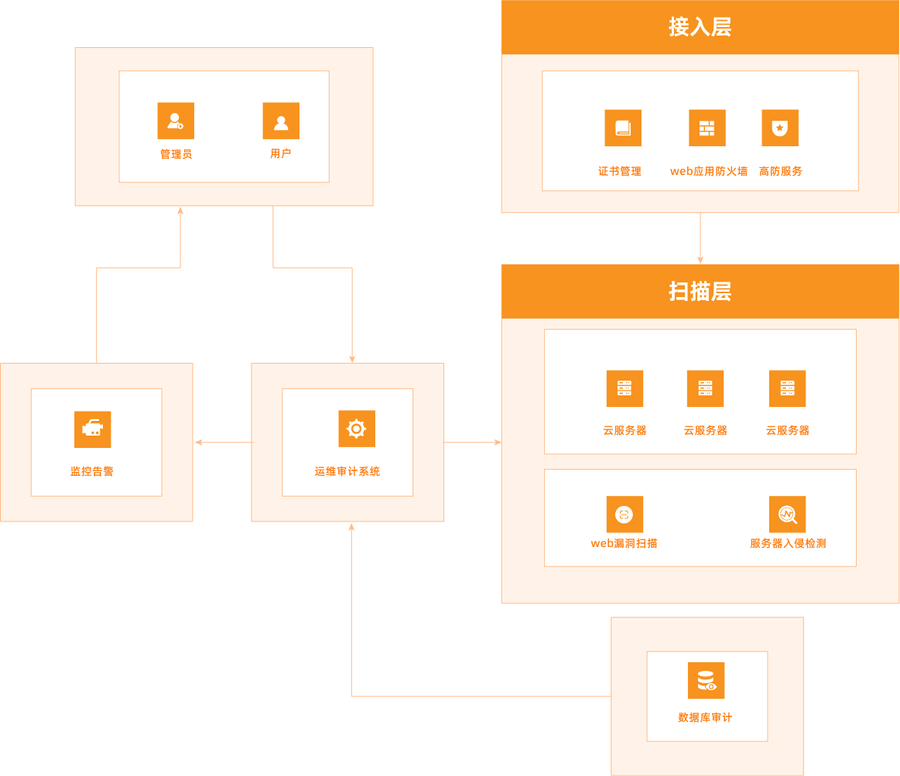

热门活动 配置推荐 产品优势 精心打造的功能 应用场景 相关产品推荐 功能发布
活动&推广
最新活动
精选云服务器1核2G 低至79.86元/年
免费试用
云服务器共享型s6 2核4G免费试用3个月
常用文档
建站教程
建站零基础入门
快速入门
通过控制台使用HCS实例（快捷版）
配置推荐
Intel版快杰型 超高性能，平易价格
S2通用型云主机 1核2G 通用型云主机
S2通用型云主机 1核2G 通用型云主机
S2通用型云主机 1核2G 通用型云主机
产品优势
30+遍布全球的可用区
在全球30多个可用区上线云主机产品，覆盖五大洲，为您的全球化业务提供体验一致的高品质云计算服务
出色的性能表现
最高支持Intel Cascadelake CPU，自研网络增强2.0技术、磁盘Binlog技术、全NVMe磁盘的RSSD云盘等，最高可实现120万IOPS的IO性能以及1000万PPS的网络性能
稳定可靠的服务承诺
99.95%的可用性承诺，支持内核热补丁技术，遭遇安全事件时可全平台在线升级，云主机无需重启
分钟内完成快捷创建
简化的主机创建步骤，以及自研Blockstreaming技术加持，云主机从创建到可访问分钟内实现
精心打造的功能
丰富的实力类型和多种存储选择
面向各类企业应用场景，云服务器HCS将提供超过30款高性能规格族供您选择。按您的实际业务场景可选择不同配置实例搭配1到17块不同容量的存储磁盘。基础版
单机实例，最高性价比，数据可靠性高达9个9，同时具备故障转移能力，可保障您的业务持续运行，支持 SQL Server Web版本。高可用版
主备架构双机实例，主备节点位于不同服务器，实现秒级高可用，支持链接服务器、分布式事务、变更数据捕获等高级特性，涵盖 SQL Server 标准版和企业版。多种存储选择
按您的实际业务场景可选择不同配置实例，搭配1到17块不同容量的存储磁盘。云盘、本地盘提供给您多样选择的同时，云盘将提供给您最高99.9999999%的可靠性
VPC专有网络
基于华赛云构建的一个隔离的网络环境，专有网络之间逻辑上彻底隔离，只能通过对外映射的IP（弹性公网IP和NAT IP）互联。基础版
单机实例，最高性价比，数据可靠性高达9个9，同时具备故障转移能力，可保障您的业务持续运行，支持 SQL Server Web版本。基础版
单机实例，最高性价比，数据可靠性高达9个9，同时具备故障转移能力，可保障您的业务持续运行，支持 SQL Server Web版本。
快照与多种镜像类型
快照与多种镜像类型，支持您的业务快速部署。基础版
单机实例，最高性价比，数据可靠性高达9个9，同时具备故障转移能力，可保障您的业务持续运行，支持 SQL Server Web版本。基础版
单机实例，最高性价比，数据可靠性高达9个9，同时具备故障转移能力，可保障您的业务持续运行，支持 SQL Server Web版本。
多种付费和存储选择
通过包年包月、按量付费、节省计划、预留实例券和抢占式5种付费模式分别满足长周期低成本以及周期高弹性的计算要求。基础版
单机实例，最高性价比，数据可靠性高达9个9，同时具备故障转移能力，可保障您的业务持续运行，支持 SQL Server Web版本。基础版
单机实例，最高性价比，数据可靠性高达9个9，同时具备故障转移能力，可保障您的业务持续运行，支持 SQL Server Web版本。
应用场景
精选相关专场，满足更多云需求
安全防护
云游戏
云游戏
云游戏

通用Web应用
大部分Web应用使用的架构，华赛云推荐C/G/R系列服务器，兼顾高效搭建使用及高性能处理能力
能够解决
CDN网络为Web应用提供内容分发服务，保证最优用户体验与成本节约
内容缓存在MOS存储中，提供高可靠性、低成本的存储容量
负载均衡处理HTTP请求，并将流量分发到主业务可用区
前端和应用服务器部署在HCS 实例上，SLB可以做到负载均衡
ESS弹性伸缩按需业务创建或释放资源，使您能够获得最优的业务性能和成本支出
部署在多可用区RDS上的数据库保证业务的容灾性能
内容缓存在MOS存储中，提供高可靠性、低成本的存储容量
负载均衡处理HTTP请求，并将流量分发到主业务可用区
前端和应用服务器部署在HCS 实例上，SLB可以做到负载均衡
ESS弹性伸缩按需业务创建或释放资源，使您能够获得最优的业务性能和成本支出
部署在多可用区RDS上的数据库保证业务的容灾性能
推荐产品
HCS
对象存储MOS
云数据库RDS
通用Web应用1111
大部分Web应用使用的架构，华赛云推荐C/G/R系列服务器，兼顾高效搭建使用及高性能处理能力
能够解决
CDN网络为Web应用提供内容分发服务，保证最优用户体验与成本节约
内容缓存在MOS存储中，提供高可靠性、低成本的存储容量
负载均衡处理HTTP请求，并将流量分发到主业务可用区
前端和应用服务器部署在HCS 实例上，SLB可以做到负载均衡
ESS弹性伸缩按需业务创建或释放资源，使您能够获得最优的业务性能和成本支出
部署在多可用区RDS上的数据库保证业务的容灾性能
内容缓存在MOS存储中，提供高可靠性、低成本的存储容量
负载均衡处理HTTP请求，并将流量分发到主业务可用区
前端和应用服务器部署在HCS 实例上，SLB可以做到负载均衡
ESS弹性伸缩按需业务创建或释放资源，使您能够获得最优的业务性能和成本支出
部署在多可用区RDS上的数据库保证业务的容灾性能
推荐产品
HCS
对象存储MOS
云数据库RDS
通用Web应用333
大部分Web应用使用的架构，华赛云推荐C/G/R系列服务器，兼顾高效搭建使用及高性能处理能力
能够解决
CDN网络为Web应用提供内容分发服务，保证最优用户体验与成本节约
内容缓存在MOS存储中，提供高可靠性、低成本的存储容量
负载均衡处理HTTP请求，并将流量分发到主业务可用区
前端和应用服务器部署在HCS 实例上，SLB可以做到负载均衡
ESS弹性伸缩按需业务创建或释放资源，使您能够获得最优的业务性能和成本支出
部署在多可用区RDS上的数据库保证业务的容灾性能
内容缓存在MOS存储中，提供高可靠性、低成本的存储容量
负载均衡处理HTTP请求，并将流量分发到主业务可用区
前端和应用服务器部署在HCS 实例上，SLB可以做到负载均衡
ESS弹性伸缩按需业务创建或释放资源，使您能够获得最优的业务性能和成本支出
部署在多可用区RDS上的数据库保证业务的容灾性能
推荐产品
HCS
对象存储MOS
云数据库RDS
相关产品推荐
对象存储MOS
云数据库RDS MySQL 版
华赛云对象存储MOS是一款海量、安全、低成本、高可靠的云存储服务，提供12个9的数据持久性，99.995%的数据可用性和多种存储类型，适用于数据湖存储，数据迁移，企业数据管理，数据处理等多种场景。
功能发布
产品简介
更深入了解产品信息
快速入门
了解如何使用HCS实例
常见问题
使用中的常见问题解答
功能发布
最新功能发布记录